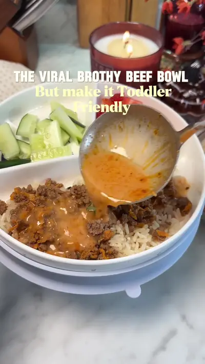

The viral brothy beef bowl… but make it toddler-friendly

Ingredients
- 1 lb ground beef
- 1 cup grated carrot
- ½ tsp garlic powder
- ½ tsp onion powder
- ½ tsp paprika
- Black pepper, optional Creamy broth
- 2 cups Beef Bone Broth
- 1 tbsp tomato paste
- 1 garlic clove, minced
- ¼ cup heavy cream
- ¼ cup finely shredded cheddar
- ½ tsp Italian seasoning To serve: cooked rice + optional parsley
Steps
- Brown the ground beef and grated carrot with the seasonings until cooked through and golden.
- Sauté garlic for 30 seconds, then add tomato paste and cook for 1–2 minutes.
- Pour in the Beef Bone Broth, add Italian seasoning, and simmer for 5 minutes.
- Lower the heat and stir in the heavy cream and cheddar until creamy.
- Add rice to your bowl, top with the beef, and ladle that creamy broth over everything.
Recipe text as written by @soniamazri on TikTok. Open original